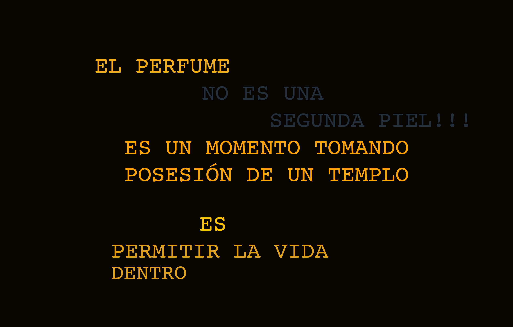

Ser consciente del olfato en nuestra construcción
sensible incide en la manera 'tan propia' que
tenemos para arrojarnos a la vida; al
diario pestil y etéreo carnaval de olores que es
la calle, a los espacios con cuerpos,
a los espacios vacíos que deshabitaron los cuerpos.
Casi se hace necesario un espacio sin olor,
como si el perfume perfecto fuese silencio,
y que recordara a nada,
lo contrario a los olores, que crean, evocan
e inevitablemente invaden nuevas memorias.
Entendiendo al cuerpo como un Templo de percepciones,